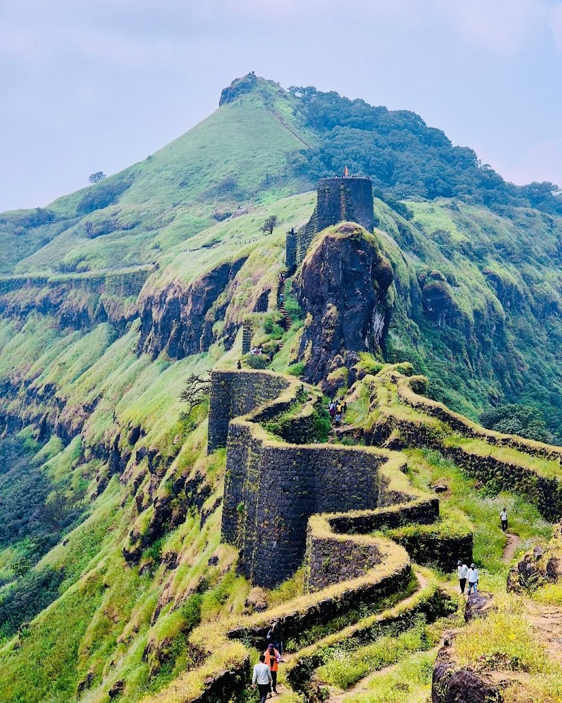

राजगड किल्ला
Location : Click Here For Google Map
- माहिती
- राजगड हा महाराष्ट्रातील एक अत्यंत ऐतिहासिक आणि महत्त्वपूर्ण किल्ला आहे. छत्रपती शिवाजी महाराजांच्या काळात हा किल्ला महत्त्वपूर्ण सैन्यस्ट्रॅटेजिक स्थान असतो. राजगड किल्ला पुणे जिल्ह्यात, सह्याद्री पर्वतरांगांमध्ये स्थित आहे आणि त्याचे दृश्य अतिशय सुंदर आहे.
राजगड किल्ल्याचे इतिहास अत्यंत गौरवपूर्ण आहे. छत्रपती शिवाजी महाराजांनी १६४५ मध्ये या किल्ल्याचे कब्जा घेतले आणि त्यानंतर किल्ला त्यांच्या साम्राज्याच्या मुख्य किल्ल्यांपैकी एक बनला. किल्ल्यावर एक महत्त्वाचे किल्ल्याचे किल्ला असलेल्या प्रमुख ठिकाणांमध्ये 'बाळकड', 'सुर्यद्वार', 'महाद्वार' आणि 'राजमहाल' यांचा समावेश आहे.
राजगड किल्ल्याचे महत्व एकूणच दोन प्रमुख कारणांमुळे आहे:
राजधानी स्थान: किल्ला शिवाजी महाराजांच्या साम्राज्याच्या आरंभातील प्रमुख किल्ल्यांपैकी एक होता.
संरक्षण आणि सुरक्षा: किल्ला पर्वतावर असल्यामुळे त्याचा स्थानिक परिसरावर उत्कृष्ट वर्चस्व होता आणि त्याचे संरक्षण सुलभ होते.
राजगड किल्ला आता एक प्रसिद्ध पर्यटन स्थळ आहे. तेथे पोहोचण्यासाठी ट्रेकिंग करताना साहसी अनुभव मिळतो. किल्ल्याचे भव्य दरवाजे, किल्ल्यावर असलेल्या पाण्याच्या टाक्या आणि उंचावरून दिसणारे नयनरम्य दृश्य पर्यटकांना आकर्षित करतात.
राजगड किल्ला छत्रपती शिवाजी महाराजांच्या नेतृत्व आणि धैर्याचा प्रतीक आहे.
Explore the historical beauty
